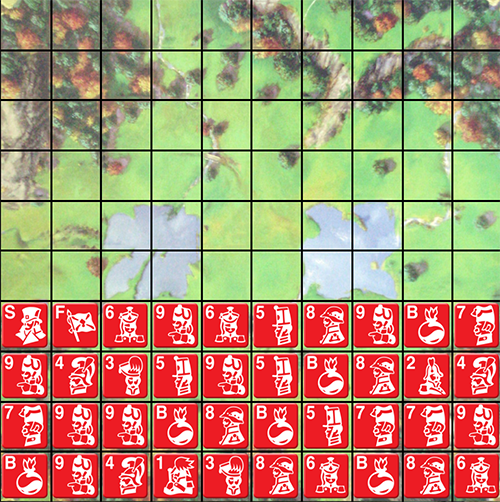

Opdrachten week 2
Welkom terug bij week 2! Deze week gaan we oefenen met jQuery, één van de meest populaire JavaScript libraries. In de presentatie van deze week en vorige week staan alle voorbeelden die je nodig hebt om de opdrachten te maken.
Onderstaande challenges kan je helaas niet maken met Firefox

Slider
Op veel sites zie je blokjes informatie die je kan tonen en verbergen met behulp van een knop. (bijvoorbeeld de inhoudsopgave in Wikipedia artikelen). jQuery maakt het makkelijk om dit op je eigen site te implementeren. Maak een webpagina met een knop 'Klik hier voor meer informatie' en een blok met informatie. Als de gebruiker op de knop klikt maak je de informatie met een animatie (on)zichtbaar.
Hint: Met de slideToggle() methode gebeurt automatisch de juiste slideUp/slideDown.

Quiz
Tijd voor onze eerste echte webapplicatie: De Grote Avans Quiz! We hebben de HTML en de CSS al voor je geschreven, maar de JavaScript ontbreekt nog. Als je het nog lastig vindt om dit in 1 keer te maken, doe het dan in de volgende stappen:
- 1. Verzin een datastructuur om je vragen en antwoorden in op te slaan.
- 2. Maak een functie die een vraag kan tonen in de webpagina. Roep die functie aan met de eerste vraag.
- 3. Voeg een event-handler toe aan de 'Volgende vraag' knop die de volgende vraag toont.
- 4. Controleer voordat je de vraag toont of het juiste antwoord is gegeven en houd goede antwoorden bij in een puntentotaal.
- 4. Voeg feedback toe waarin je de gebruiker laat weten of hij het goede of verkeerde antwoord heeft gegeven.

Calculator
Zin in extra uitdaging en een wat meer algoritmische opdracht? Dan is deze opdracht voor jou!
Aan jou de taak om een online rekenmachine te maken die net als een echte rekenmachine werkt! Je kan met de knopjes of met het toetsenbord rekensommen intoetsen die verschijnen in het virtuele schermpje van de rekenmachine. Als je op de '=' klikt reken je in JavaScript de uitkomst van de som om te tonen.
Uitdaging: Voeg toe dat je met de uitkomst weer verder kan rekenen net als op een echte rekenmachine.
Huiswerk

Elke week gaan we een stukje van de eindopdracht maken. Vorige week hebben we al een bord gemaakt met speelstukken waar je op kan klikken. Deze week gaan we ze verplaatsen om zo een beginopstelling te maken.
Gebruik jQuery om te detecteren op welke vlakken op het bord, en op welke stukken er is geklikt. Als je eerst een speelstuk aanklikt (zet deze in eerste instantie naast of onder het bord) en daarna op een leeg vakje op het bord klikt verplaats je dat speelstuk naar het lege vakje op het bord.
Zorg ervoor dat de gebruiker op die manier alle 40 speelstukken op de onderste 4 rijen kan neerzetten. Zorg ervoor dat je niet twee speelstukken in hetzelfde vakje kan zetten, en dat je speelstukken later nog in een ander vakje kan plaatsen.
Gebruik wederom een 10x10 array om in bij te houden welke stukken waar staan en om te bepalen of een vakje bezet is of niet.
| Code |
Naam |
Aantal |
| B |
Bom |
6 |
| 1 |
Maarschalk |
1 |
| 2 |
Generaal |
1 |
| 3 |
Kolonel |
2 |
| 4 |
Majoor |
3 |
| 5 |
Kapitein |
4 |
| 6 |
Luitenant |
4 |
| 7 |
Sergeant |
4 |
| 8 |
Mineur |
5 |
| 9 |
Verkenner |
8 |
| S |
Spion |
1 |
| F |
Vlag |
1 |